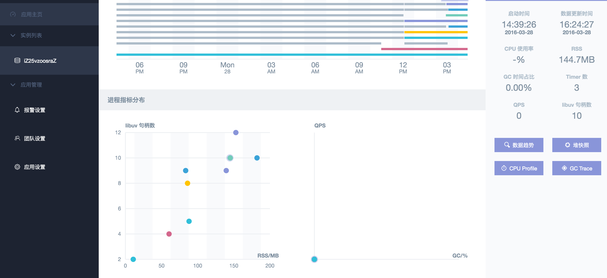

alinode是由alinode运行时、AgentX、命令集、服务平台组成，提供对目标主机的实例，node进程进行包括
cpu、内存、堆栈信息等进行监控的服务。
安装alinode
alinode是与 Node 社区版完全兼容的二进制运行时环境，推荐使用tnvm工具进行安装, 它能自动识别你的操作系统和系统架构。
1
| $ wget -qO- https://raw.githubusercontent.com/aliyun-node/tnvm/master/install.sh | bash
|
完成安装后，需要将tnvm添加为命令行程序。根据平台的不同，可能是~/.bashrc，~/.profile或~/.zshrc等
tnvm 是一个可以完全替换nvm的命令功能，可以使用tnvm安转官方的node版本.
前面提到的tnvm安装好了之后。可以使用tnvm安装alinode
查看alinode版本
1 2 3 4 5 6 7 8 9 10 11 12
| $ tnvm ls-remote alinode alinode-v0.3.3 alinode-v0.3.4 alinode-v0.3.5 alinode-v1.1.1 alinode-v1.2.1 alinode-v1.2.2 alinode-v1.2.3 alinode-v1.3.0 alinode-v1.4.0 alinode-v1.5.1 alinode-v1.5.2
|
tnvm使用方法和nvm大致一样，下面安装alinode
1 2 3 4
| $ tnvm install alinode-v0.3.4 $ tnvm use alinode-v0.3.4 $ tnvm ls alinode alinode-v0.3.4
|
下载命令集
命令集为一组 alinode 服务执行任务所需要的命令集合，alinode 服务有且仅有执行这些命令的权限。
可以将该命令集随便放在摸个目录下，但是要记好，下面会需要这个路径。
1
| $ git clone https://github.com/aliyun-node/commands
|
安装AgentX
1 2 3 4 5 6 7 8 9 10 11 12 13
| { "server": "120.55.151.247:8080", "appid": "您的应用ID", "secret": "您的应用Secret", "heartbeatInterval": 60, "reconnectDelay": 10, "reportInterval": 60, "logdir": "alinode生产的日志放置的路径，与NODE_LOG_DIR路径保持一致。如：/tmp/", "cmddir": "命令集路径，绝对路径，如：/Users/jacksontian/commands", "error_log": [ "您的应用在业务层面产生的异常日志的路径，如：/root/.logs/error.#YYYY#-#MM#-#DD#.log" ] }
|
注：上面的server不需要进行修改
首先在alinode官网注册登陆
上方菜单栏点击[ 控制台 ]

- 根据提示创建完成
- 将appid和secret输入到上方的配置文件中
- logdir，cmddir，error_log根据自己的需求自行填写目录
启动agentx
1 2
| $ export ENABLE_NODE_LOG=YES $ export NODE_LOG_DIR=/tmp/
|
需要注意的是，此处的NODE_LOG_DIR需要与配置文件中的logdir保持一致。
1
| $ nohup agentx /path/to/your/config.json &
|
当agentx启动之后，你在该服务器使用node进行启动的所有进程都能被监视到（查看时存在一定的延时）
查看监控详情
